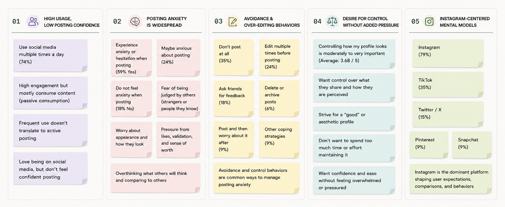
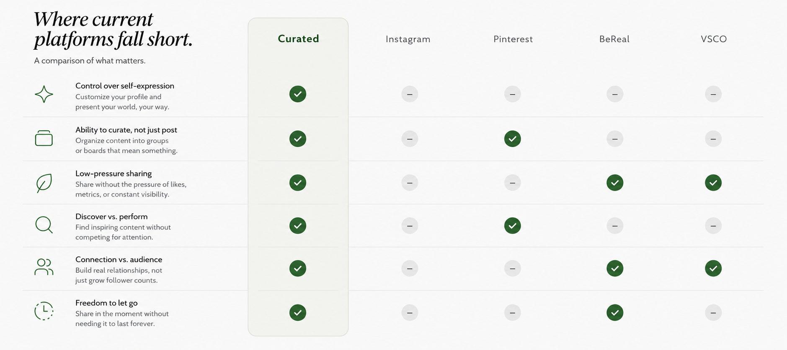

Problem / Challenge
Social media has been optimized for performance, not authentic expression. The result is anxiety, over-editing, and, eventually, disengagement from sharing altogether.
Meet Lyne. She just got back from a weekend trip with 27 photos she loves. She hasn't posted a single one, because posting isn't just posting anymore. It's editing, reordering, curating, and overthinking.
My Role
I was the team lead and the only one from a design background. The rest of the team came from product and project management. So design was mine end to end: the concept, the research direction, the design system, and the interface itself.
That made cross-functional collaboration the real work. My teammates drove what they did best: aggregating and synthesizing the research, pressure-testing the concept, and running the competitive analysis. I translated all of it into a user centric product.
What I owned — design
Product concept · research direction · design system · the full interface.
What the team drove — product
Research aggregation & synthesis · concept validation · competitive analysis · keeping us on track.
Research
We ran a survey with 40 participants about their relationship with posting. The pattern was consistent: the friction isn't creating content; it's the pressure around sharing it.
63%
Feel anxiety or hesitation when posting
35%
Don't post at all
25%
Edit multiple times before posting
Self-reported, from a survey of 40 participants.

The Insight
We started somewhere else entirely. The first concept was a social platform built around control over your profile: a feed you could rearrange and fine-tune to present the "perfect" version of yourself.
But held up against the research, it fell apart. Giving people more ways to perfect their profile didn't relieve the anxiety; it added to it. We'd designed another reason to overthink. The real problem wasn't how people arrange what they post; it was that posting felt like a high-stakes decision at all.
So we reframed from "how" to "whether," and ran a brainstorm around the one behavior that already felt low-pressure: the photo dump. That session is where Curated was born: curate as you go, decide later.
The Solution
Instead of posting, Lyne adds photos to a Curation throughout her day: a living collection of moments, movable and adaptable, just like her. Curated automatically selects and randomizes them, and shares over the course of the week.
At the end of the week, it asks one simple question: "What do you want to do with this?" Curated removes the pressure to be perfect in the moment and gives control back after.
Differentiation
Where BeReal is built around real-time posting, Curated removes decision-making entirely, automatically selecting and sharing moments over time. We benchmarked against Instagram, Pinterest, BeReal, and VSCO across control over self-expression, low-pressure sharing, and connection over audience to find the white space.

Outcomes & Next
Curated's roadmap is staged to validate the core hypothesis and grow from there: post-launch validation (does reducing decisions reduce anxiety?), behavior optimization (refining how it curates and shares), platform integration (auto-sharing to Instagram), and expansion into a personal system that lives beyond posting.
Learnings
The most valuable move wasn't a screen. It was the willingness to throw out our first assumption the moment the research disagreed with it. Leading a team taught me that the clearest thing a lead can hand off is a sharp problem statement everyone can design against.